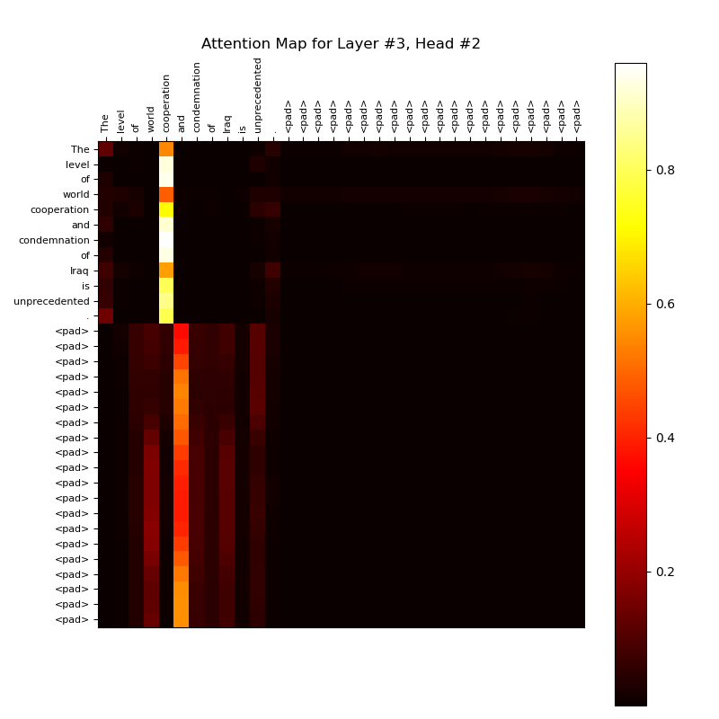
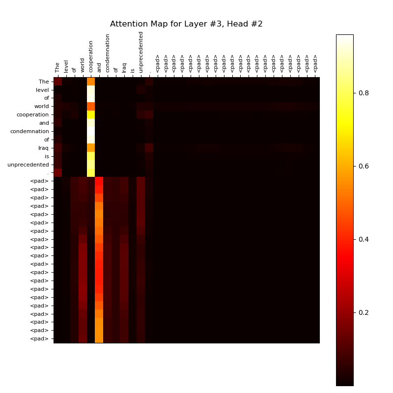
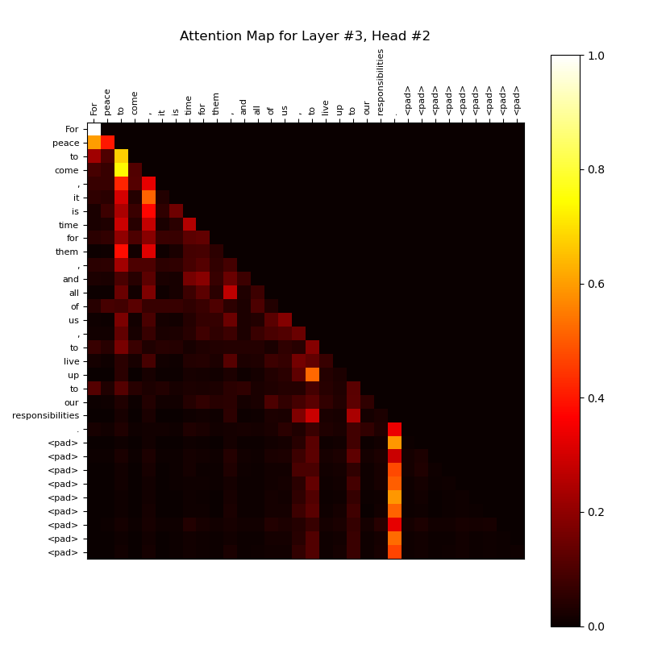
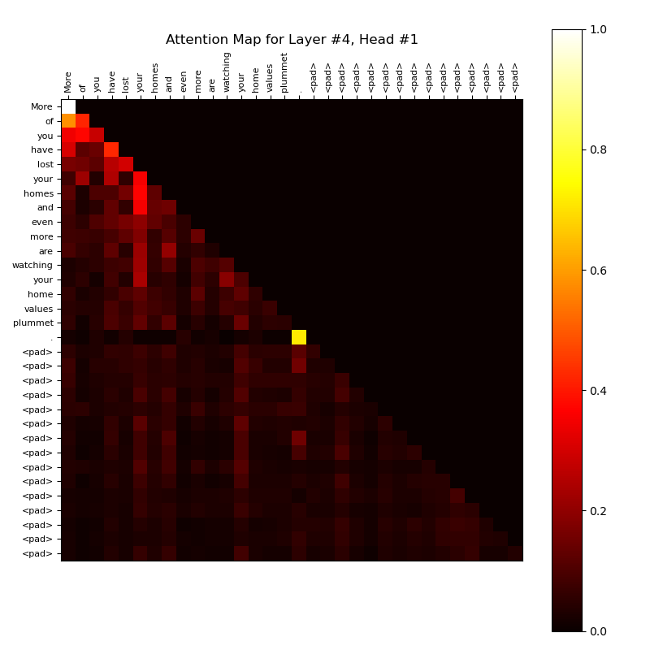

Assignment 2: Report
Author: Anay Kulkarni (ankulkarni@ucsd.edu)
PART 1
Introduction
This report details the findings from the experiment conducted to classify speech segments attributed to Barack Obama, George W. Bush, and George H. Bush. The model employs a transformer architecture enhanced with absolute positional encoding using sine and cosine functions. The experiment evaluates the model’s performance across multiple epochs to determine its accuracy on both training and test datasets.
Experiment Setup
Optimizer and Loss Function:
-
Optimizer: The Adam optimizer was employed for training the model. Adam is an adaptive learning rate optimization algorithm that combines the benefits of two other extensions of stochastic gradient descent. It computes individual adaptive learning rates for different parameters from estimates of first and second moments of the gradients, making it well-suited for problems with noisy gradients, such as in deep learning.
-
Loss Function: The cross-entropy loss function was used to quantify the difference between the predicted class probabilities and the true class labels. This loss function is commonly used in classification tasks, as it measures the performance of a model whose output is a probability value between 0 and 1. The objective is to minimize the cross-entropy loss during training, leading to improved classification accuracy.
Model Architecture:
- Absolute Positional Encoding: The positional encoding for the-th position and-th dimension is defined as follows:
-
Encoder Architecture: The encoder comprises 4 layers, each containing 2 attention heads. This multi-layer architecture allows the model to learn hierarchical representations of the input data while utilizing multiple attention heads to focus on different parts of the input sequence. The use of absolute positional encoding ensures that the sequential information is preserved across the layers.
-
Classifier Architecture: Following the encoder, a simple feedforward classifier was implemented with one hidden layer. The hidden layer uses the ReLU (Rectified Linear Unit) activation function, which helps introduce non-linearity into the model. This architecture allows the classifier to make predictions based on the features extracted by the encoder.
Hyperparameters
The following hyperparameters were used in the experiment:
| Hyperparameter | Value | Description |
|---|---|---|
embed_dim |
64 | Dimension of the embedding vector for input tokens, determining the feature size for each token. |
num_heads |
2 | Number of attention heads in the multi-head attention mechanism, allowing the model to focus on different parts of the input. |
num_layers |
4 | Total number of transformer layers in the encoder, which dictates the model’s depth. |
num_classes |
3 | Number of output classes corresponding to each politician being classified. |
n_input |
64 | Input size for the classifier, matching the embedding size of the transformer. |
ff_dim |
100 | Dimension of the feedforward network’s hidden layer within each transformer block. |
max_len |
32 | Maximum sequence length (block size) for input sentences, determining how many tokens can be processed. |
batch_size |
16 | Number of samples processed together in a single iteration during training. |
dropout |
0.1 | Dropout rate applied to reduce overfitting by randomly setting a fraction of input units to 0 during training. |
num_epochs |
15 | Total number of complete passes through the training dataset. |
learning_rate |
1e-3 | Step size for updating weights during training, controlling how much to change the model in response to the estimated error. |
max_iters |
500 | Maximum number of iterations for processing the entire dataset to limit computational load. |
Results
The model was trained for 15 epochs. The following table summarizes the training and test accuracy achieved at each epoch:
| Epoch | Training Accuracy (%) | Test Accuracy (%) |
|---|---|---|
| 1 | 43.16 | 33.73 |
| 2 | 43.69 | 44.13 |
| 3 | 47.32 | 40.00 |
| 4 | 52.25 | 47.20 |
| 5 | 55.35 | 56.93 |
| 6 | 61.14 | 64.93 |
| 7 | 66.83 | 55.73 |
| 8 | 70.84 | 69.07 |
| 9 | 73.85 | 69.60 |
| 10 | 77.20 | 76.53 |
| 11 | 79.88 | 79.73 |
| 12 | 83.65 | 80.40 |
| 13 | 85.37 | 80.27 |
| 14 | 85.76 | 83.20 |
| 15 | 88.34 | 84.93 |
Observations
- Performance: The model started with relatively low training and test accuracies in the first epoch, indicating the necessity for the training process to establish initial weights effectively. By the end of the training process, the model achieved a training accuracy of 88.34% and a test accuracy of 84.93%, demonstrating its ability to generalize from the training set to unseen data.
Attention Mechanism
 

Visualization of attention maps for sample sentence:
-
Map Characteristics: Each attention map shows a distribution of attention across tokens in the input sentence for a particular layer and head. The brighter areas indicate higher attention values, suggesting that these tokens are more “focused on” by that attention head.
-
Padding Tokens: Both maps’ rightmost and bottom portions consist of
<pad>tokens. It’s typical for these regions to have less meaningful or even uniform attention values because the padding is not relevant to the actual content.
Sample sentence under consideration:
“When one nation pursues a nuclear weapon, the risk of nuclear attack rises for all nations.”
Attention Map for Layer #4, Head #1
- High Attention on Specific Tokens: In this map, we see distinct columns and rows with higher attention around tokens such as “nation,” “pursues,” and “nuclear.”
- Localized Attention: This head appears to focus more on pairs of words within the sentence, with notable attention on nearby or related words. For example, “nation” and “pursues” may have strong connections due to context, while “nuclear” is a significant focus given the topic.
- Spread of Attention: This head balances its attention across multiple tokens rather than focusing solely on one word. This might indicate it’s responsible for capturing semantic relationships across nearby words.
- Effect on
<pad>Tokens: The attention weights across words and pad tokens are dark, which shows that the head recognizes that the pad tokens do not add meaning to the sentence.
Sample sentence under consideration:
“When one nation pursues a nuclear weapon, the risk of nuclear attack rises for all nations.”
Attention Map for Layer #3, Head #2
- Strong Focus on specific Tokens: This head appears to concentrate much more on the token “cooperation” and its association with other tokens in the sentence (like “level” and “condemnation”). This may indicate that the model is attending particularly to specific words that it considers important for context.
- Padding Tokens: The tokens appear toward the bottom and right side of the heatmap, receiving minimal attention. This behavior is expected, as the model typically learns to focus on real tokens while ignoring padding during training.
Model Parameters
In general number of parameters for transformation layer can be calculated by,
-
Token and Position Embeddings (No bias terms):
- Embedding for Tokens:
- Embedding for Positional Encoding: This embedding is static as we use absolute positional encoding
- Embedding for Tokens:
-
Transformer Encoder Layers:
EachTransformerEncoderLayercontains:-
Parameters in
MultiHeadAttention:- For
Q,K,V, andoutputlinear layers:
- For
-
Feedforward Network:
- First linear layer:
- Second linear layer:
- First linear layer:
-
Layer Normalization: Each layer normalization typically has two parameters (weight and bias) per feature dimension:
-
Total for one
TransformerEncoderLayer:
-
-
Total for all layers in
TransformerEncoder:
If we havenum_layers:
-
Parameters in
FeedforwardClassifier:- First Linear Layer:
- Second Linear Layer:
- Total Parameters,
- First Linear Layer:
-
Total Parameters in
TransformerModelwithCLS:
Conclusion:
The experiment successfully demonstrated the application of a transformer-based model for classifying speech segments attributed to different politicians. The use of absolute positional encoding proved effective in maintaining the sequential information of the input data. With improvements in accuracy throughout the training process, the findings indicate that the model is capable of learning meaningful representations for speech classification tasks.
Output:
Loading data and creating tokenizer ...
Vocabulary size is 5755
Epoch [1/15], Training Accuracy: 43.16, Test Accuracy: 33.73
Epoch [2/15], Training Accuracy: 43.69, Test Accuracy: 44.13
Epoch [3/15], Training Accuracy: 47.32, Test Accuracy: 40.00
Epoch [4/15], Training Accuracy: 52.25, Test Accuracy: 47.20
Epoch [5/15], Training Accuracy: 55.35, Test Accuracy: 56.93
Epoch [6/15], Training Accuracy: 61.14, Test Accuracy: 64.93
Epoch [7/15], Training Accuracy: 66.83, Test Accuracy: 55.73
Epoch [8/15], Training Accuracy: 70.84, Test Accuracy: 69.07
Epoch [9/15], Training Accuracy: 73.85, Test Accuracy: 69.60
Epoch [10/15], Training Accuracy: 77.20, Test Accuracy: 76.53
Epoch [11/15], Training Accuracy: 79.88, Test Accuracy: 79.73
Epoch [12/15], Training Accuracy: 83.65, Test Accuracy: 80.40
Epoch [13/15], Training Accuracy: 85.37, Test Accuracy: 80.27
Epoch [14/15], Training Accuracy: 85.76, Test Accuracy: 83.20
Epoch [15/15], Training Accuracy: 88.34, Test Accuracy: 84.93
Input tensor shape: torch.Size([1, 32])
Number of attention maps = Layers * heads = 8
Figure(640x480)
Input tensor shape: torch.Size([1, 32])
Number of attention maps = Layers * heads = 8
Figure(640x480)
PART 2
Introduction
We discuss the results of training a language model (LM) on speeches by three U.S. Presidents: Barack Obama, George W. Bush, and George H. Bush. The objective was to evaluate the model’s performance in terms of perplexity, which measures how well the model predicts the next word in a sequence. A lower perplexity indicates better performance.
Experimental Setup and Model Architecture:
| Hyperparameter | Value | Description |
|---|---|---|
embed_dim |
64 | Dimension of the token embeddings, representing tokens in a continuous vector space. |
num_heads |
2 | Number of attention heads in the multi-head self-attention mechanism. |
num_layers |
4 | Total number of transformer decoder layers stacked in the model. |
ff_dim |
100 | Dimension of the feedforward layers in each transformer layer (hidden dimension). |
max_len |
32 | Maximum sequence length or block size for input sequences. |
batch_size |
16 | Number of samples processed in one iteration (batch size). |
dropout |
0.1 | Dropout rate used to prevent overfitting during training. |
learning_rate |
1e-3 | Learning rate for the Adam optimizer, controlling the step size during parameter updates. |
eval_interval |
100 | Frequency of evaluating training and test perplexity during training iterations. |
eval_iters |
200 | Number of iterations used to evaluate perplexity on the test set. |
max_iters |
500 | Maximum number of iterations for processing the dataset; limits training to approximately 256,000 tokens. |
The transformer decoder model consists of:
-
Token Embeddings: Trainable embeddings of 64 dimensions represent tokens in a continuous vector space.
-
Positional Encoding: Uses sine and cosine functions for absolute positional encoding, capturing token order in sequences.
-
Decoder Layers: Comprises 4 decoder layers, each containing:
- Masked Self-Attention Layer: Focuses on relevant tokens while masking future tokens.
- Feed Forward Layers: Two linear layers that expand and project the representation, enhancing pattern capture.
- Normalization Layers: Two LayerNorm layers in each decoder layer stabilize training and improve convergence.
-
Output Layer: Converts decoder outputs into vocabulary probabilities through a linear transformation.
Training Configuration
-
Optimizer: Utilizes the Adam optimizer for adaptive learning rate capabilities.
-
Loss Function: Employs cross-entropy loss to measure the performance of token predictions.
Training and Evaluation Process:
The model is trained by iteratively minimizing cross-entropy loss, with perplexity used to evaluate performance on training and test sets across multiple iterations. We perform 500 training iterations, compute training, and test perplexity at an interval of 100 iterations. Perplexity is computed over cross-entropy losses averaged over 200 iterations.
Perplexity Results:
Barack Obama
| Iteration | Training Perplexity | Test Perplexity |
|---|---|---|
| 100 | 567.34 | 680.03 |
| 200 | 392.19 | 525.82 |
| 300 | 286.79 | 449.00 |
| 400 | 216.10 | 398.32 |
| 500 | 172.04 | 371.26 |
George W. Bush
| Iteration | Training Perplexity | Test Perplexity |
|---|---|---|
| 100 | 577.55 | 775.91 |
| 200 | 405.37 | 612.83 |
| 300 | 274.80 | 517.62 |
| 400 | 198.02 | 461.38 |
| 500 | 153.60 | 452.25 |
George H. Bush
| Iteration | Training Perplexity | Test Perplexity |
|---|---|---|
| 100 | 582.72 | 720.28 |
| 200 | 417.83 | 571.90 |
| 300 | 289.76 | 472.10 |
| 400 | 217.54 | 419.76 |
| 500 | 171.96 | 398.97 |
Attention Maps
Now, we discuss how different layers interact with different sentences.
 
Sample sentence under consideration:
“For peace to come, it is time for them, and all of us, to live up to our responsibilities.”
Attention Map for Layer #3, Head #2
This attention map represents the attention weights for Layer #3, Head #2 of the transformer decoder model.
-
Masked Self-Attention:
- The attention weights are most concentrated along the diagonal and lower half of the matrix, which suggests that tokens in this layer and head are focusing primarily on themselves or the preceding tokens. This behavior is clear depiction of the masked self-attention applied by the model. A bright spot at the top left corner indicates that when the sequence is just one token long, all the attention is focused on it, and as the sequence size increases, the attention weights get spread over other tokens that precede them.
-
Phrase-Level Attention:
- There are noticeable pockets of attention extending from the diagonal. For example, there is slightly higher attention paid to tokens like “peace,” “to,” “come,” and “live,” and “up.” These words may represent important parts of the sentence, capturing meaning or emphasis, and could indicate that the model is trying to link semantically related words.
-
Handling Padding Tokens:
- The
<pad>tokens at the end of the sequence (from “responsibilities” onward) have little to no attention weight, as indicated by the dark squares in the lower right. This is expected, as padding tokens are generally ignored by the model once attention masking is applied.
- The
Sample sentence under consideration:
“More of you have lost your homes and even more are watching your home values plummet.”
Attention Map for Layer #4, Head #1
This attention map for Layer #4, Head #1 highlights the model’s focus on specific words in the sentence. Most of the behaviours for this layer, such as masked self-attention, ignoring padding, and focus its on key words are similar to the previous layer discussed.
- Emphasis on Key Phrases: Words like “lost,” “homes,” “values,” and “plummet” receive more attention, likely because they convey critical information related to the sentence’s meaning.
- Broader Context Capture: Compared to the previous layer, this layer seems to capture a marginally broader context, with attention reaching further back, potentially for understanding sentence-wide dependencies.
Discussion of Findings:
Training and Test Perplexity
- General Trends: Across all three presidents, a consistent trend was observed: both training and test perplexity decreased as training progressed. This indicates that the model effectively learned the language patterns present in the speeches.
- Barack Obama: The model achieved the lowest test perplexity of 371.26 at the final iteration. The reduction from an initial perplexity of 680.03 demonstrates significant learning.
- George W. Bush: Despite starting with a higher test perplexity (775.91), the model achieved a final test perplexity of 452.25, indicating improvement but remaining higher than that of Obama.
- George H. Bush: Similar to George W. Bush, the model improved its test perplexity significantly from 720.28 to 398.97, but it also remained higher than Obama’s final perplexity.
- Training vs. Test Perplexity: The training perplexity consistently remains lower than the test perplexity across iterations. This could indicate a slight overfitting, especially for certain speeches, but the perplexity values are converging towards each other.
- Learning Efficiency: The speed at which perplexity decreases suggests that the model is effectively learning the linguistic patterns. The significant drops between the first few iterations (e.g., from 567.34 to 392.19 for Obama) demonstrate effective initial learning.
Model Parameters
As discussed in part 1, number of parameters for transformation layer can be calculated by,
-
Token and Position Embeddings (No bias terms):
- Embedding for Tokens:
- Embedding for Positional Encoding: This embedding is static as we use absolute positional encoding
- Embedding for Tokens:
-
Transformer Decoder Layers:
EachTransformerDecoderLayercontains:-
Parameters in
MaskedMultiHeadAttention:- For
Q,K,V, andoutputlinear layers:
- For
-
Feedforward Network:
- First linear layer:
- Second linear layer:
- First linear layer:
-
Layer Normalization: Each layer normalization typically has two parameters (weight and bias) per feature dimension:
-
Total for one
TransformerDecoderLayer:
-
Total for all layers:
If we havenum_layers,
-
-
Other layers in
TransformerDecoder:- Layer Normalization: Each layer normalization typically has two parameters (weight and bias) per feature dimension:
- Output Layer: Projects vectors from embed_dim to vocab_size
- Layer Normalization: Each layer normalization typically has two parameters (weight and bias) per feature dimension:
-
Total trainable parameters in
TransformerDecoder:
Output:
Loading data and creating tokenizer ...
Vocabulary size is 5755
Training and Testing LM for 0: Barack Obama
Iteration [100/500], Training Perplexity: 567.34, Test Perplexity: 680.03
Iteration [200/500], Training Perplexity: 392.19, Test Perplexity: 525.82
Iteration [300/500], Training Perplexity: 286.79, Test Perplexity: 449.00
Iteration [400/500], Training Perplexity: 216.10, Test Perplexity: 398.32
Iteration [500/500], Training Perplexity: 172.04, Test Perplexity: 371.26
Training and Testing LM for 1: George W. Bush
Iteration [100/500], Training Perplexity: 577.55, Test Perplexity: 775.91
Iteration [200/500], Training Perplexity: 405.37, Test Perplexity: 612.83
Iteration [300/500], Training Perplexity: 274.80, Test Perplexity: 517.62
Iteration [400/500], Training Perplexity: 198.02, Test Perplexity: 461.38
Iteration [500/500], Training Perplexity: 153.60, Test Perplexity: 452.25
Training and Testing LM for 2: George H. Bush
Iteration [100/500], Training Perplexity: 582.72, Test Perplexity: 720.28
Iteration [200/500], Training Perplexity: 417.83, Test Perplexity: 571.90
Iteration [300/500], Training Perplexity: 289.76, Test Perplexity: 472.10
Iteration [400/500], Training Perplexity: 217.54, Test Perplexity: 419.76
Iteration [500/500], Training Perplexity: 171.96, Test Perplexity: 398.97
Encoding Sentence: More of you have lost your homes and even more are watching your home values plummet.
Input tensor shape: torch.Size([1, 32])
Number of attention maps = Layers * heads = 8
Figure(800x800)
Encoding Sentence: For peace to come, it is time for them, and all of us, to live up to our responsibilities.
Input tensor shape: torch.Size([1, 32])
Number of attention maps = Layers * heads = 8
Figure(800x800)
====================================================================================================
Layer (type:depth-idx) Output Shape Param #
====================================================================================================
TransformerDecoder [16, 32, 5755] --
├─Embedding: 1-1 [16, 32, 64] 368,320
├─Dropout: 1-2 [16, 32, 64] --
├─ModuleList: 1-3 -- --
│ └─TransformerDecoderLayer: 2-1 [16, 32, 64] --
│ │ └─MaskedMultiHeadAttention: 3-1 [16, 32, 64] 16,640
│ │ └─Dropout: 3-2 [16, 32, 64] --
│ │ └─LayerNorm: 3-3 [16, 32, 64] 128
│ │ └─Sequential: 3-4 [16, 32, 64] 12,964
│ │ └─Dropout: 3-5 [16, 32, 64] --
│ │ └─LayerNorm: 3-6 [16, 32, 64] 128
│ └─TransformerDecoderLayer: 2-2 [16, 32, 64] --
│ │ └─MaskedMultiHeadAttention: 3-7 [16, 32, 64] 16,640
│ │ └─Dropout: 3-8 [16, 32, 64] --
│ │ └─LayerNorm: 3-9 [16, 32, 64] 128
│ │ └─Sequential: 3-10 [16, 32, 64] 12,964
│ │ └─Dropout: 3-11 [16, 32, 64] --
│ │ └─LayerNorm: 3-12 [16, 32, 64] 128
│ └─TransformerDecoderLayer: 2-3 [16, 32, 64] --
│ │ └─MaskedMultiHeadAttention: 3-13 [16, 32, 64] 16,640
│ │ └─Dropout: 3-14 [16, 32, 64] --
│ │ └─LayerNorm: 3-15 [16, 32, 64] 128
│ │ └─Sequential: 3-16 [16, 32, 64] 12,964
│ │ └─Dropout: 3-17 [16, 32, 64] --
│ │ └─LayerNorm: 3-18 [16, 32, 64] 128
│ └─TransformerDecoderLayer: 2-4 [16, 32, 64] --
│ │ └─MaskedMultiHeadAttention: 3-19 [16, 32, 64] 16,640
│ │ └─Dropout: 3-20 [16, 32, 64] --
│ │ └─LayerNorm: 3-21 [16, 32, 64] 128
│ │ └─Sequential: 3-22 [16, 32, 64] 12,964
│ │ └─Dropout: 3-23 [16, 32, 64] --
│ │ └─LayerNorm: 3-24 [16, 32, 64] 128
├─LayerNorm: 1-4 [16, 32, 64] 128
├─Linear: 1-5 [16, 32, 5755] 374,075
====================================================================================================
Total params: 861,963
Trainable params: 861,963
Non-trainable params: 0
Total mult-adds (Units.MEGABYTES): 13.79
====================================================================================================
Input size (MB): 0.00
Forward/backward pass size (MB): 33.08
Params size (MB): 3.45
Estimated Total Size (MB): 36.53
====================================================================================================
PART 3
To create a comprehensive report, we can divide the findings into sections covering Introduction, Experimental Setup, Results (with tables), and Discussion. Here’s a draft for each section with tables to summarize the performance metrics for each model.
Report: Comparison of Positional Encoding in Transformer Models for Speech Classification
1. Introduction
This experiment investigates the effectiveness of two positional encoding techniques — Absolute Positional Encoding (using sinusoidal functions) and Attention with Linear Biases (Alibi) — on a transformer encoder model tasked with classifying excerpts of speeches from three U.S. presidents: Barack Obama, George W. Bush, and George H. Bush. Each encoding type represents positional information differently, which may affect the model’s ability to capture and generalize patterns within the speeches.
2. Experimental Setup
A transformer encoder model was developed to generate contextual word embeddings, which were then fed into a feedforward classifier to predict the speaker. The model was trained over 100 epochs using both encoding methods, and training and test accuracies were recorded. The vocabulary size was 5755 tokens.
Optimizer and Loss Function:
Optimizer: AdamW optimizer was used for training the transformer models in this experiment. AdamW is an improved version of the Adam optimizer, specifically designed to decouple weight decay from the gradient update rule, thereby enhancing model generalization. In traditional Adam, weight decay is integrated into the optimization step, which can inadvertently affect the moving averages of past gradients. AdamW, however, applies weight decay as a separate step, preserving the intended benefits of L2 regularization and helping prevent overfitting. This makes it particularly well-suited for transformer-based architectures where regularization is essential for stable training and robust model performance.
Loss Function: The cross-entropy loss function was used to quantify the difference between the predicted class probabilities and the true class labels. This loss function is commonly used in classification tasks, as it measures the performance of a model whose output is a probability value between 0 and 1. The objective is to minimize the cross-entropy loss during training, leading to improved classification accuracy.
Model Architecture:
Absolute Positional Encoding: The positional encoding for the-th position and-th dimension is defined as follows:
AliBi Positional Encoding: Attention with Linear Biases (AliBi) encoding is a positional encoding method designed to introduce biases into the attention mechanism based on the relative distances between tokens. Unlike absolute positional encodings, which assign each token a unique position, Alibi encoding applies a learned linear bias that scales according to the distance between tokens. This setup allows the model to modulate the importance of positional relationships flexibly, which is particularly useful for handling long sequences where certain token distances hold more contextual significance. In this experiment, a scaling factor was introduced to amplify the bias effect, making Alibi encoding adaptable for the speech classification task.
- The bias matrix is generally formulated:
Given:
- as the distance between tokens in the sequence (e.g., token and token have ),
- A scaling factor for each head (often set empirically or fixed across heads).
The bias between tokens and in the sequence is computed as:
where:
- is a negative scalar multiplier that increases the bias with token distance,
- is the absolute difference .
In practice, each attention head can use a distinct scaling factor , giving a separate bias matrix for each head, where each element is calculated as:
This bias matrix is then added to the attention logits prior to softmax normalization, emphasizing or de-emphasizing token relationships based on distance in a linearly scaled way.
Encoder Architecture: The encoder comprises 4 layers, each containing 2 attention heads. This multi-layer architecture allows the model to learn hierarchical representations of the input data while utilizing multiple attention heads to focus on different parts of the input sequence. The use of absolute positional encoding ensures that the sequential information is preserved across the layers.
Classifier Architecture: Following the encoder, a simple feedforward classifier was implemented with one hidden layer. The hidden layer uses the ReLU (Rectified Linear Unit) activation function, which helps introduce non-linearity into the model. This architecture allows the classifier to make predictions based on the features extracted by the encoder.
Hyperparameters:
| Hyperparameter | Value | Description |
|---|---|---|
embed_dim |
64 | Dimension of the embedding vectors for each token in the input sequence. |
num_heads |
2 | Number of attention heads in each multi-head attention layer of the transformer. |
num_layers |
4 | Number of transformer encoder layers in the model. |
num_classes |
3 | Number of output classes (Barack Obama, George W. Bush, George H. Bush). |
n_input |
64 | Input size for the classifier; matches the embedding dimension of the transformer. |
ff_dim |
100 | Dimensionality of the feedforward layer’s hidden layer in the transformer encoder. |
max_len |
32 | Maximum sequence length for the input tokens (or block size). |
batch_size |
16 | Number of samples processed in each training/testing iteration (batch size). |
dropout |
0.1 | Dropout rate applied during training to prevent overfitting. |
num_epochs |
100 | Total number of training epochs. |
learning_rate |
1e-4 | Learning rate for the optimizer, controlling the step size in the gradient descent process. |
weight_decay |
1e-1 | Weight decay applied during optimization to prevent overfitting. |
scaling_factor |
1.1 | Scaling factor for the distance bias in Alibi encoding to adjust the influence of token distances. |
3. Results
The tables below compare the training and test accuracies achieved by both models over selected epochs.
Table 1: Training Accuracy (%)
| Epoch | Absolute Positional Encoding | Alibi Encoding |
|---|---|---|
| 5 | 44.79 | 45.17 |
| 10 | 49.76 | 51.10 |
| 20 | 56.79 | 60.56 |
| 30 | 65.82 | 69.17 |
| 50 | 75.62 | 82.46 |
| 70 | 80.69 | 88.58 |
| 90 | 85.76 | 93.12 |
| 100 | 86.71 | 93.79 |
Table 2: Test Accuracy (%)
| Epoch | Absolute Positional Encoding | Alibi Encoding |
|---|---|---|
| 5 | 33.33 | 39.47 |
| 10 | 47.87 | 50.13 |
| 20 | 55.33 | 60.27 |
| 30 | 67.07 | 67.73 |
| 50 | 74.80 | 80.67 |
| 70 | 78.80 | 85.20 |
| 90 | 86.00 | 86.67 |
| 100 | 85.20 | 87.60 |
4. Discussion
In the discussion section, we can focus on how Alibi encoding exhibited slightly better performance than Absolute Positional Encoding but showed early signs of overfitting as training progressed. This overfitting could stem from the Alibi encoding’s more complex representation of positional information, allowing it to capture greater variance in context.
-
Early Epochs Advantage: Alibi encoding demonstrated a consistent edge over Absolute Positional Encoding in both training and test accuracies from the early stages. This suggests that Alibi encoding is more capable of incorporating positional relationships, enhancing the model’s initial ability to identify relevant context in speeches by different presidents.
-
Variance Capture and Overfitting: The Alibi-based model maintained higher training accuracy, signaling its capacity to capture finer positional nuances. This improved performance, however, appeared to introduce some degree of overfitting. Alibi’s scaling of positional biases enables it to capture complex patterns based on token distances, adding flexibility in attending to varying context lengths across speeches. This adaptability, while beneficial, can sometimes lead to model overfitting, especially if the model starts memorizing specific patterns rather than generalizing them effectively.
-
Performance Plateau: Absolute Positional Encoding reached a performance peak (86.00%) around epoch 70, while Alibi encoding continued improving until the final epoch, attaining a slightly higher accuracy (87.60%). This difference could indicate that Alibi encoding’s added complexity and variance capture extend the model’s capacity to learn, though it may require careful tuning to avoid overfitting in applications where generalization is critical.
Overall, Alibi encoding provided a nuanced advantage, demonstrating its potential as a more adaptable method for modeling complex relationships within sequential data. The results suggest that Alibi’s approach, if tuned appropriately, could offer improved generalization over traditional positional encoding in tasks where context-sensitive positional information is pivotal.
Effects of positional encoding strategies on Attention maps
The attention maps from the transformer encoder with absolute positional encoding and AliBi positional encoding reveal distinct patterns in how attention is distributed. The map using absolute positional encoding shows a more scattered attention pattern, with certain tokens such as “Because” and “brought” receiving concentrated focus, indicating reliance on explicit positional cues to maintain context. In contrast, the AliBi positional encoding map displays a pronounced diagonal pattern, emphasizing sequential and local dependencies. This suggests that AliBi allows the model to naturally prioritize nearby tokens, enhancing its ability to capture relative positions effectively. This difference highlights how each encoding method influences the model’s capacity to handle long-range dependencies and contextual nuances within sequences.
Effects of scaling factor on Attention maps in AliBi Positional Encoding


The attention maps generated using AliBi positional encoding with different scaling factors (0.5, 1.0, and 2.0) demonstrate how the scaling factor affects the distribution of attention scores. With a scaling factor of 2.0, the attention map shows a strong diagonal pattern, indicating a focus on local context and nearby tokens. This suggests that higher scaling factors enhance the model’s ability to capture short-range dependencies. As the scaling factor decreases to 1.0, the attention distribution becomes slightly more spread out, balancing between local and broader contextual information. At a scaling factor of 0.5, the attention pattern is even more dispersed, allowing the model to consider longer-range dependencies more effectively. This progression illustrates that lower scaling factors enable a token to extend its attention span across more distant tokens and higher scaling factors make tokens focus on the nearest neighbours.
5. Conclusion
The experiment demonstrates that Alibi encoding with a scaling factor can provide better performance in terms of training and test accuracy on a speech classification task. Alibi encoding’s ability to capture positional variance more effectively seems to help the transformer model generalize well across different types of political speeches. This supports its suitability in scenarios with complex, context-dependent token relationships. The experiment also highlights that although more complex encoding strategies allow to capture higher variance in the data, it also makes them susceptible to overfitting. In such cases, hyperparameter tuning and regularization become all the more important. The choice of positional encodings used can significantly impact the model performance.
Output:
Loading data and creating tokenizer ...
Vocabulary size is 5755
Comparing performance of a Transformer Encoder Model with FF Classifier on Absolute Positional Encoding (Sinusoidal) vs AliBi (Attention with Linear Biases)
Using Absolute Positional Encoding:
Epoch [5/100], Training Accuracy: 44.79, Test Accuracy: 33.33
Epoch [10/100], Training Accuracy: 49.76, Test Accuracy: 47.87
Epoch [15/100], Training Accuracy: 52.87, Test Accuracy: 52.93
Epoch [20/100], Training Accuracy: 56.79, Test Accuracy: 55.33
Epoch [25/100], Training Accuracy: 61.04, Test Accuracy: 60.80
Epoch [30/100], Training Accuracy: 65.82, Test Accuracy: 67.07
Epoch [35/100], Training Accuracy: 68.55, Test Accuracy: 68.27
Epoch [40/100], Training Accuracy: 71.75, Test Accuracy: 72.67
Epoch [45/100], Training Accuracy: 71.99, Test Accuracy: 76.27
Epoch [50/100], Training Accuracy: 75.62, Test Accuracy: 74.80
Epoch [55/100], Training Accuracy: 77.39, Test Accuracy: 79.33
Epoch [60/100], Training Accuracy: 78.59, Test Accuracy: 81.47
Epoch [65/100], Training Accuracy: 79.59, Test Accuracy: 82.00
Epoch [70/100], Training Accuracy: 80.69, Test Accuracy: 78.80
Epoch [75/100], Training Accuracy: 82.07, Test Accuracy: 82.40
Epoch [80/100], Training Accuracy: 83.65, Test Accuracy: 82.80
Epoch [85/100], Training Accuracy: 84.03, Test Accuracy: 83.20
Epoch [90/100], Training Accuracy: 85.76, Test Accuracy: 86.00
Epoch [95/100], Training Accuracy: 86.76, Test Accuracy: 85.20
Epoch [100/100], Training Accuracy: 86.71, Test Accuracy: 85.20
Using AliBi (Attention with Linear Biases):
Epoch [5/100], Training Accuracy: 45.17, Test Accuracy: 39.47
Epoch [10/100], Training Accuracy: 51.10, Test Accuracy: 50.13
Epoch [15/100], Training Accuracy: 54.92, Test Accuracy: 55.07
Epoch [20/100], Training Accuracy: 60.56, Test Accuracy: 60.27
Epoch [25/100], Training Accuracy: 65.01, Test Accuracy: 62.67
Epoch [30/100], Training Accuracy: 69.17, Test Accuracy: 67.73
Epoch [35/100], Training Accuracy: 72.66, Test Accuracy: 70.00
Epoch [40/100], Training Accuracy: 76.05, Test Accuracy: 74.53
Epoch [45/100], Training Accuracy: 78.97, Test Accuracy: 77.07
Epoch [50/100], Training Accuracy: 82.46, Test Accuracy: 80.67
Epoch [55/100], Training Accuracy: 83.27, Test Accuracy: 80.53
Epoch [60/100], Training Accuracy: 85.33, Test Accuracy: 83.87
Epoch [65/100], Training Accuracy: 86.57, Test Accuracy: 84.27
Epoch [70/100], Training Accuracy: 88.58, Test Accuracy: 85.20
Epoch [75/100], Training Accuracy: 89.05, Test Accuracy: 85.47
Epoch [80/100], Training Accuracy: 89.58, Test Accuracy: 84.27
Epoch [85/100], Training Accuracy: 91.16, Test Accuracy: 86.13
Epoch [90/100], Training Accuracy: 93.12, Test Accuracy: 86.67
Epoch [95/100], Training Accuracy: 93.12, Test Accuracy: 87.33
Epoch [100/100], Training Accuracy: 93.79, Test Accuracy: 87.60
Encoding Sentence: When one nation pursues a nuclear weapon, the risk of nuclear attack rises for all nations.
Input tensor shape: torch.Size([1, 32])
Number of attention maps = Layers * heads = 8
Figure(800x800)
Encoding Sentence: When one nation pursues a nuclear weapon, the risk of nuclear attack rises for all nations.
Input tensor shape: torch.Size([1, 32])
Number of attention maps = Layers * heads = 8
Figure(800x800)
Plot saved as Figure-train.png
Plot saved as Figure-test.png